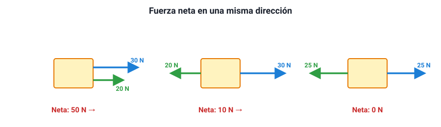
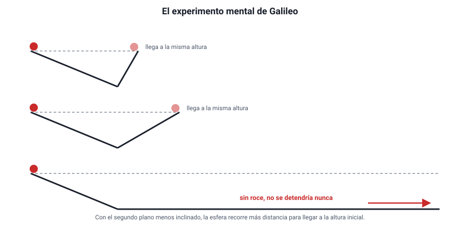
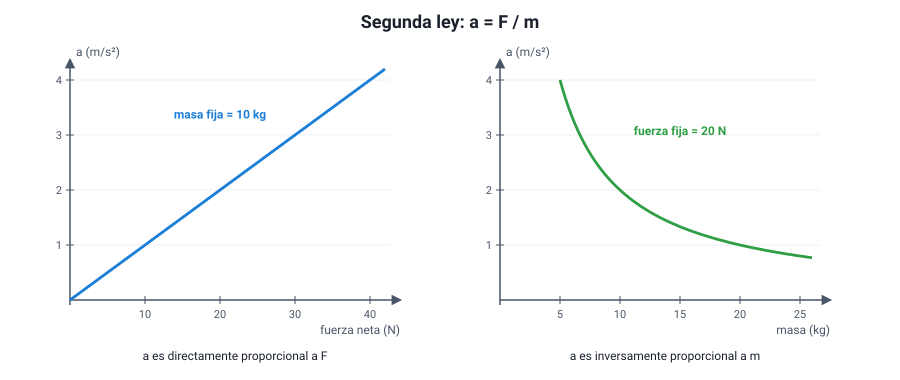
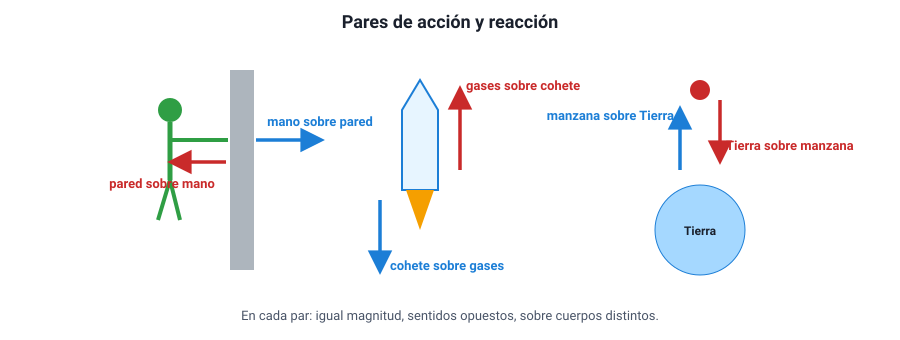
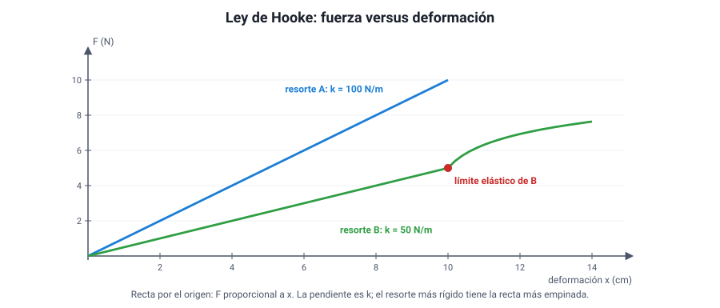
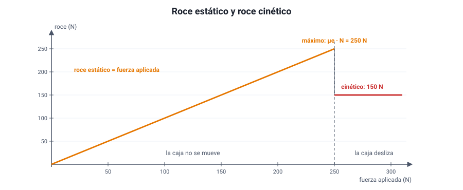
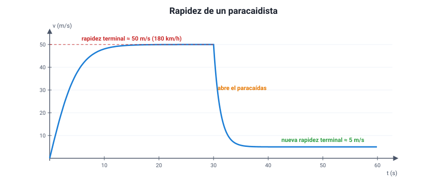
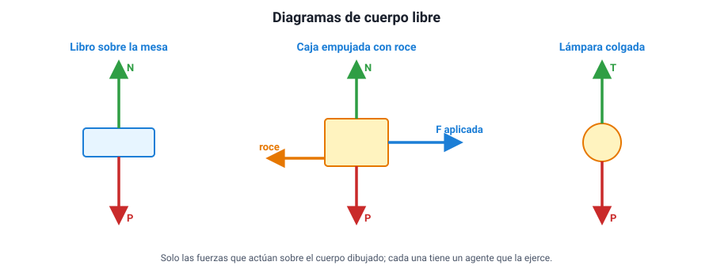
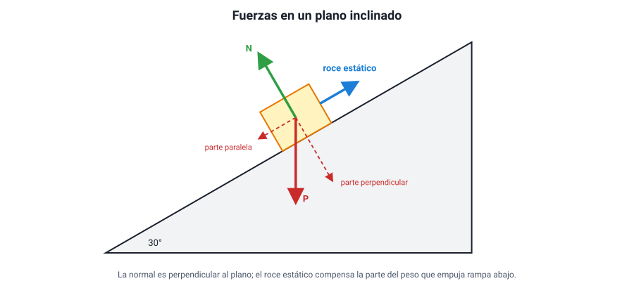

Capítulo 6: Dinámica: fuerzas y leyes de Newton
Área temática: Mecánica
¿Por qué te vas hacia adelante cuando el bus frena de golpe? ¿Por qué cuesta más empezar a mover un mueble que mantenerlo en movimiento? ¿Por qué un astronauta pesa menos en la Luna, pero sigue costándole lo mismo detener una caja que viene hacia él? En el capítulo 5 describimos cómo se mueven los cuerpos; ahora vamos a explicar por qué. La respuesta está en las fuerzas y en tres leyes que Isaac Newton publicó en 1687 y que siguen sirviendo para diseñar puentes, autos y cohetes.
En este capítulo vas a aprender qué es una fuerza y cómo se suman; qué dicen las tres leyes de Newton —inercia, relación entre fuerza neta y aceleración, y acción y reacción—; cómo se comportan las fuerzas más comunes: peso, normal, tensión, fuerza elástica (ley de Hooke) y roce estático, cinético y con el aire; y cómo se dibuja un diagrama de cuerpo libre para resolver problemas con cuerpos que se mueven con velocidad constante o con aceleración constante.
Este capítulo en la PAES 2027. Cubre tres conocimientos del área Mecánica del temario DEMRE: las leyes de Newton en cuerpos con velocidad constante o aceleración constante, con su diagrama de cuerpo libre; las fuerzas peso, elástica (ley de Hooke), tensión y normal, entre otras; y el roce estático y cinético, más el roce con el aire en términos cualitativos. Se apoya en el capítulo 5: aceleración, MRU y MRUA se dan por sabidos.
1. Conceptos clave
| Concepto | Definición |
|---|---|
| Dinámica | Parte de la mecánica que estudia las causas del movimiento: las fuerzas |
| Fuerza | Interacción entre dos cuerpos que puede cambiar el estado de movimiento o la forma de un cuerpo; es un vector y se mide en newton (N) |
| Newton (N) | Fuerza que le da a una masa de 1 kg una aceleración de 1 m/s²: 1 N = 1 kg · m/s² |
| Fuerza neta o resultante | Suma vectorial de todas las fuerzas que actúan sobre un cuerpo |
| Fuerzas de contacto y a distancia | Las primeras requieren que los cuerpos se toquen (normal, roce, tensión); las segundas actúan sin contacto (gravitacional, eléctrica, magnética) |
| Inercia | Tendencia de un cuerpo a mantener su estado de reposo o de movimiento rectilíneo uniforme |
| Masa | Medida de la inercia de un cuerpo; se mide en kilogramos y no cambia de un lugar a otro |
| Equilibrio | Estado de un cuerpo cuya fuerza neta es cero: está en reposo o en MRU |
| Primera ley de Newton | Si la fuerza neta sobre un cuerpo es cero, este mantiene su velocidad (reposo o MRU) |
| Segunda ley de Newton | La fuerza neta sobre un cuerpo es igual a su masa por su aceleración: Fneta = m · a |
| Tercera ley de Newton | Si A ejerce una fuerza sobre B, B ejerce sobre A una fuerza de igual magnitud y sentido opuesto |
| Par de acción y reacción | Las dos fuerzas de la tercera ley; actúan sobre cuerpos distintos y por eso nunca se anulan entre sí |
| Peso (P) | Fuerza con que la Tierra (u otro astro) atrae a un cuerpo: P = m · g |
| Fuerza normal (N) | Fuerza que ejerce una superficie sobre un cuerpo apoyado en ella, perpendicular a la superficie |
| Tensión (T) | Fuerza que ejerce una cuerda, cable o cadena tensa sobre los cuerpos a los que está unida |
| Fuerza elástica | Fuerza que ejerce un resorte deformado, en sentido contrario a la deformación |
| Ley de Hooke | Dentro del límite elástico, la fuerza de un resorte es proporcional a su deformación: F = k · x |
| Constante elástica (k) | Medida de la rigidez de un resorte; se mide en N/m |
| Roce estático | Fuerza que impide que un cuerpo empiece a deslizar; se ajusta hasta un valor máximo μe · N |
| Roce cinético | Fuerza que se opone al deslizamiento de un cuerpo que ya se mueve: μc · N |
| Coeficiente de roce (μ) | Número sin unidad que depende de los materiales en contacto |
| Roce con el aire | Fuerza que el aire opone al movimiento de un cuerpo; crece con su rapidez y su área |
| Rapidez terminal | Rapidez constante que alcanza un cuerpo que cae cuando el roce con el aire iguala a su peso |
| Diagrama de cuerpo libre (DCL) | Dibujo de un cuerpo aislado con todas las fuerzas que actúan sobre él, y solo esas |
2. Qué es una fuerza
a. Una interacción entre dos cuerpos
Una fuerza es una interacción entre dos cuerpos. Siempre hay dos: el que empuja y el empujado, el que atrae y el atraído. Por eso una fuerza siempre se puede nombrar como «la fuerza que A ejerce sobre B»: la fuerza que tu mano ejerce sobre la puerta, la que la Tierra ejerce sobre una manzana, la que el piso ejerce sobre tus pies.
Una fuerza puede producir dos tipos de efectos:
- Cambiar el estado de movimiento de un cuerpo: ponerlo en marcha, detenerlo, acelerarlo, frenarlo o cambiar su dirección.
- Deformarlo: estirar un resorte, abollar una lata, aplastar una pelota.
Lo que una fuerza no es. Un cuerpo no «tiene» fuerza ni la «lleva» consigo. Una pelota que ya salió de la mano del lanzador no lleva «la fuerza del lanzamiento»: una vez en el aire, las únicas fuerzas sobre ella son su peso y el roce con el aire. Esta idea errónea, que viene de Aristóteles y de la Edad Media (la teoría del «ímpetu»), es la que más confunde en los ítems de dinámica.
b. La fuerza es un vector
Para describir una fuerza no basta con decir cuánto vale: también importa hacia dónde actúa. Empujar una caja hacia el norte o hacia el sur con la misma intensidad produce efectos opuestos. Por eso la fuerza es un vector, con:
- magnitud (su intensidad, en newton),
- dirección (horizontal, vertical, inclinada…),
- sentido (hacia un lado o hacia el otro de esa dirección),
- punto de aplicación (dónde actúa sobre el cuerpo).
Se dibuja como una flecha: su largo representa la magnitud y su orientación, la dirección y el sentido.
La unidad de fuerza en el SI es el newton (N). Una idea de su tamaño: el peso de una manzana mediana (unos 100 g) es de aproximadamente 1 N. Una persona de 60 kg pesa unos 590 N.
Las fuerzas se miden con un dinamómetro: un resorte con una escala graduada, que se estira más cuanto mayor es la fuerza (sección 7).
c. Fuerzas de contacto y fuerzas a distancia
| Tipo | Cuándo actúan | Ejemplos |
|---|---|---|
| De contacto | Solo cuando los cuerpos se tocan | Normal, roce, tensión de una cuerda, empuje de una mano, fuerza elástica de un resorte, roce con el aire |
| A distancia | Aunque los cuerpos estén separados | Gravitacional (el peso), eléctrica, magnética |
A escala microscópica, casi todas las fuerzas de contacto son en realidad fuerzas eléctricas entre los átomos de las superficies que se tocan. Pero para describir el movimiento de objetos cotidianos, la clasificación de la tabla es la útil.
d. La fuerza neta
Casi siempre, sobre un cuerpo actúan varias fuerzas a la vez. Lo que determina su movimiento es la fuerza neta (o resultante): la suma vectorial de todas ellas.
En una misma recta, sumar vectores es sumar con signo:

Tira y afloja. Dos equipos tiran de una cuerda. El equipo A tira hacia la izquierda con 800 N y el B hacia la derecha con 750 N. Tomando la derecha como positiva: Fneta = 750 − 800 = −50 N. La neta es de 50 N hacia la izquierda: gana A, y la cuerda acelera hacia su lado.
Si ambos tiraran con 800 N, la fuerza neta sería cero: la cuerda quedaría quieta, o seguiría moviéndose con velocidad constante si ya se movía. Que la fuerza neta sea cero no significa que no haya fuerzas: significa que se compensan.
Cuando las fuerzas no están en la misma recta, se suman como vectores: por ejemplo, dos fuerzas perpendiculares de 3 N y 4 N dan una resultante de 5 N (por el teorema de Pitágoras). En la PAES, la mayoría de las situaciones se reduce a fuerzas en una o dos direcciones perpendiculares.
3. Primera ley de Newton: la inercia
a. De Aristóteles a Galileo
Durante casi dos mil años se aceptó la idea de Aristóteles: el estado natural de los cuerpos es el reposo, y para que algo se mueva hace falta una fuerza que lo empuje todo el tiempo. Parece razonable: si dejas de pedalear, la bicicleta se detiene; si dejas de empujar un carro, se para.
Galileo miró el mismo fenómeno de otra manera. Hizo rodar esferas por un plano inclinado que bajaba y luego subía por otro. Observó que la esfera subía casi hasta la misma altura de la que partió, y que cuanto menos inclinado era el segundo plano, más lejos llegaba. Llevó la idea al límite: si el segundo plano fuera horizontal y no hubiera roce, la esfera seguiría moviéndose para siempre, porque nunca alcanzaría la altura inicial.

La conclusión cambió la física: no hace falta una fuerza para mantener un movimiento. Lo que detiene la bicicleta no es la falta de empuje, sino el roce con el suelo y con el aire. Si no hubiera ninguna fuerza que se opusiera, seguiría indefinidamente.
Por qué es un buen ejemplo de ciencia. Nadie puede construir un plano sin roce. Galileo usó un experimento mental: extrapoló una tendencia que sí observaba (menos inclinación → más distancia) hasta una situación ideal. Es un modelo, y los modelos se aceptan porque sus predicciones se cumplen, no porque se vean directamente.
b. El enunciado
Newton recogió la idea de Galileo como su primera ley (1687):
Si la fuerza neta sobre un cuerpo es cero, el cuerpo mantiene su velocidad: si estaba en reposo, sigue en reposo; si se movía, sigue en línea recta con rapidez constante (MRU).
La propiedad de los cuerpos de mantener su estado de movimiento se llama inercia, y por eso a la primera ley también se la llama ley de inercia. La medida de la inercia de un cuerpo es su masa: cuanto mayor es la masa, más difícil es cambiar su velocidad.
Un cuerpo con fuerza neta cero está en equilibrio. Hay dos tipos:
- Equilibrio estático: el cuerpo está en reposo (un libro sobre la mesa).
- Equilibrio dinámico: el cuerpo se mueve con velocidad constante (un paracaidista que cae con rapidez terminal, un auto que va a 100 km/h constantes en una recta).
Dos errores simétricos. 1. «Si un cuerpo se mueve, hay una fuerza neta en el sentido del movimiento.» Falso: un auto a velocidad constante tiene fuerza neta cero. El motor empuja, pero el roce compensa exactamente. 2. «Si la fuerza neta es cero, el cuerpo está quieto.» Falso: también puede estar en MRU.
La fuerza neta no está relacionada con la velocidad, sino con el cambio de velocidad (la aceleración). Eso es la segunda ley.
c. La inercia en la vida diaria
| Situación | Explicación |
|---|---|
| El bus frena de golpe y los pasajeros se van hacia adelante | Sus cuerpos tienden a seguir con la velocidad que tenían; el bus es el que se detiene, no ellos |
| El bus parte de golpe y los pasajeros se van hacia atrás | Sus cuerpos tienden a quedarse en reposo mientras el bus avanza bajo ellos |
| Se tira rápido del mantel y la vajilla queda sobre la mesa | Por su inercia, los platos casi no alcanzan a moverse en el breve tiempo que actúa el roce |
| Se golpea el mango de un martillo contra el suelo para ajustar la cabeza | El mango se detiene y la cabeza, por inercia, sigue bajando y se encaja |
| En una curva, el cuerpo parece «tirado» hacia afuera | En realidad el cuerpo tiende a seguir en línea recta, y es el auto el que dobla |
El cinturón de seguridad y el apoyacabezas existen por la primera ley. En un choque, el auto se detiene en décimas de segundo, pero el cuerpo de los ocupantes sigue avanzando a la velocidad que traía hasta que algo lo detiene: el cinturón, o el parabrisas.
d. Sistemas de referencia inerciales
La primera ley no se cumple desde cualquier punto de vista. Dentro de un bus que frena, una pelota en el piso rueda hacia adelante sin que nada la empuje: desde el bus parece que la primera ley falla. Pero desde la calle todo tiene sentido: la pelota sigue con su velocidad y es el bus el que frena.
Los sistemas de referencia en que se cumple la primera ley se llaman inerciales: son los que están en reposo o en MRU (capítulo 5, relatividad de Galileo). Un bus que frena, acelera o dobla no es un sistema inercial. Las leyes de Newton se aplican siempre desde un sistema inercial, normalmente el suelo.
4. Segunda ley de Newton: fuerza, masa y aceleración
a. El enunciado
La primera ley dice qué pasa cuando la fuerza neta es cero. La segunda ley dice qué pasa cuando no lo es:
La aceleración de un cuerpo es directamente proporcional a la fuerza neta que actúa sobre él e inversamente proporcional a su masa, y tiene la dirección y el sentido de la fuerza neta.
Fneta = m · a o bien a = Fneta / m
| Símbolo | Magnitud | Unidad SI |
|---|---|---|
| Fneta | Fuerza neta (suma de todas las fuerzas) | N |
| m | Masa | kg |
| a | Aceleración | m/s² |
De aquí sale la definición del newton: 1 N es la fuerza neta que le da a 1 kg una aceleración de 1 m/s² (1 N = 1 kg · m/s²).
b. Qué dicen las dos proporcionalidades
- Con la misma masa, al duplicar la fuerza neta se duplica la aceleración.
- Con la misma fuerza neta, al duplicar la masa la aceleración se reduce a la mitad.

Por eso un camión cargado necesita mucho más tiempo para acelerar y para frenar que uno vacío con el mismo motor y los mismos frenos: con la misma fuerza, más masa significa menos aceleración.
Tres usos de la misma ecuación.
- Calcular la aceleración. Una fuerza neta de 60 N actúa sobre un carro de 20 kg: a = 60 / 20 = 3 m/s².
- Calcular la fuerza neta. Un auto de 1 200 kg pasa de 0 a 20 m/s en 10 s. Su aceleración es 2 m/s², así que la fuerza neta fue F = 1 200 · 2 = 2 400 N.
- Calcular la masa. Una fuerza neta de 150 N produce una aceleración de 0,5 m/s²: m = 150 / 0,5 = 300 kg.
c. La fuerza neta es la suma de todas
El error más frecuente al usar la segunda ley es poner en F una de las fuerzas en vez de la neta.
Una caja empujada con roce. Una persona empuja una caja de 40 kg con 200 N hacia la derecha, y el roce con el piso es de 120 N hacia la izquierda.
- Fuerza neta: 200 − 120 = 80 N hacia la derecha.
- Aceleración: a = 80 / 40 = 2 m/s² hacia la derecha.
Usar los 200 N directamente daría 5 m/s², un resultado equivocado. Y si la persona empujara con exactamente 120 N, la neta sería cero: la caja seguiría con velocidad constante si ya se movía (primera ley).
d. La segunda ley conecta la dinámica con la cinemática
La segunda ley es el puente entre este capítulo y el anterior:
- Fuerza neta constante → aceleración constante → MRUA.
- Fuerza neta cero → aceleración cero → reposo o MRU.
Así, conociendo las fuerzas se puede predecir el movimiento, y observando el movimiento se pueden deducir las fuerzas. Si un gráfico velocidad–tiempo es una recta inclinada, la fuerza neta es constante y distinta de cero; si es horizontal, la fuerza neta es cero.
La dirección de la aceleración es la de la fuerza neta, no la de la velocidad. Un auto que frena se mueve hacia adelante, pero su aceleración y la fuerza neta sobre él apuntan hacia atrás. Una pelota lanzada hacia arriba sube, pero la fuerza neta (su peso) y su aceleración apuntan hacia abajo durante todo el vuelo.
5. Tercera ley de Newton: acción y reacción
a. El enunciado
Si un cuerpo A ejerce una fuerza sobre un cuerpo B, entonces B ejerce sobre A una fuerza de igual magnitud, en la misma dirección y en sentido opuesto.
Las dos fuerzas forman un par de acción y reacción. Los nombres son convencionales: cualquiera de las dos puede llamarse «acción». Lo importante es que siempre aparecen juntas: no existe una fuerza aislada. Si empujas una pared, la pared te empuja a ti; si la Tierra atrae una manzana, la manzana atrae a la Tierra con la misma fuerza.

b. Las cuatro características de un par
| Característica | Qué significa |
|---|---|
| Igual magnitud | Siempre, aunque los cuerpos tengan masas muy distintas |
| Sentidos opuestos | Sobre la misma línea de acción |
| Actúan sobre cuerpos distintos | Una sobre A, la otra sobre B |
| Son del mismo tipo | Si una es gravitacional, la otra también; si una es de contacto, la otra también |
Por qué no se anulan. Es la pregunta clásica: «si son iguales y opuestas, ¿por qué no se cancelan?». Porque actúan sobre cuerpos distintos. Solo se pueden sumar fuerzas que actúan sobre el mismo cuerpo. La fuerza que el caballo ejerce sobre la carreta actúa sobre la carreta; la que la carreta ejerce sobre el caballo actúa sobre el caballo. Para saber si la carreta se mueve, se suman las fuerzas sobre la carreta y nada más.
c. Igual fuerza no significa igual efecto
Si las fuerzas del par son iguales, ¿por qué la manzana cae hacia la Tierra y no la Tierra hacia la manzana? Por la segunda ley: la misma fuerza produce aceleraciones muy distintas en masas muy distintas. Una manzana de 0,1 kg recibe una fuerza de unos 1 N y acelera a 9,8 m/s². La Tierra recibe la misma fuerza de 1 N, pero con su masa de 6 × 1024 kg su aceleración es de unos 10−25 m/s², imposible de percibir.
Dos patinadores. Un patinador de 80 kg y una patinadora de 40 kg, en reposo sobre el hielo, se empujan con las manos. Durante el empujón, cada uno recibe la misma fuerza, digamos 120 N.
- Aceleración de él: 120 / 80 = 1,5 m/s².
- Aceleración de ella: 120 / 40 = 3 m/s².
Salen en sentidos opuestos, y ella con el doble de aceleración, porque tiene la mitad de masa. No importa quién «empujó primero»: las dos fuerzas existen a la vez.
d. La tercera ley nos permite movernos
Para avanzar, casi siempre hay que empujar algo hacia atrás para que ese algo nos empuje hacia adelante:
- Caminar: el pie empuja el suelo hacia atrás (con roce) y el suelo empuja el pie hacia adelante. Sobre hielo liso cuesta caminar porque hay poco roce.
- Nadar o remar: la mano o el remo empujan el agua hacia atrás y el agua empuja al nadador o al bote hacia adelante.
- Un cohete: expulsa gases hacia atrás a gran velocidad y los gases lo empujan hacia adelante. Por eso funciona en el vacío del espacio: no necesita aire para «apoyarse».
- Un auto: las ruedas empujan el pavimento hacia atrás y el pavimento empuja al auto hacia adelante.
e. Cómo no confundir un par con dos fuerzas equilibradas
Un libro sobre una mesa está en equilibrio: su peso (hacia abajo) y la normal (hacia arriba) son iguales y opuestos. Pero no son un par de acción y reacción, porque ambas actúan sobre el mismo cuerpo (el libro) y son de tipos distintos (una gravitacional, la otra de contacto).
| Fuerza | Su pareja de acción y reacción |
|---|---|
| Peso del libro (la Tierra atrae al libro) | El libro atrae a la Tierra hacia arriba |
| Normal sobre el libro (la mesa empuja al libro hacia arriba) | El libro empuja a la mesa hacia abajo |
Que el peso y la normal sean iguales es consecuencia de la primera ley (el libro está en equilibrio), no de la tercera. Y, como se verá, no siempre son iguales.
6. Peso, fuerza normal y tensión
a. El peso
El peso (P) de un cuerpo es la fuerza con que la Tierra —o el astro en que esté— lo atrae. Apunta hacia el centro del planeta (en la práctica, verticalmente hacia abajo) y vale:
P = m · g
donde g es la aceleración de gravedad del lugar: unos 9,8 m/s² en la superficie terrestre (en muchos ejercicios se usa 10 m/s²). Es la misma g de la caída libre: si el peso es la única fuerza, la segunda ley da a = P / m = g.
b. Masa y peso no son lo mismo
En el lenguaje diario se dice «peso 60 kilos», pero en física masa y peso son magnitudes distintas:
| Masa (m) | Peso (P) | |
|---|---|---|
| Qué mide | La cantidad de materia y la inercia del cuerpo | La fuerza con que un astro lo atrae |
| Tipo | Escalar | Vector (apunta hacia el centro del astro) |
| Unidad SI | Kilogramo (kg) | Newton (N) |
| ¿Cambia de un lugar a otro? | No | Sí, depende de g |
| Instrumento | Balanza de platillos (compara masas) | Dinamómetro |
| Lugar | g aproximada | Peso de una persona de 60 kg |
|---|---|---|
| Tierra | 9,8 m/s² | ≈ 590 N |
| Marte | 3,7 m/s² | ≈ 220 N |
| Luna | 1,6 m/s² | ≈ 97 N |
Lo que no cambia en la Luna. Un astronauta pesa en la Luna la sexta parte que en la Tierra, así que puede levantar una caja con mucho menos esfuerzo. Pero detenerla o acelerarla en horizontal le cuesta lo mismo que en la Tierra, porque eso depende de la masa (la inercia), que es la misma. Si una pregunta mezcla «más liviano» con «más fácil de frenar», hay una confusión entre masa y peso.
c. La fuerza normal
Cuando un cuerpo se apoya sobre una superficie, la superficie lo empuja con una fuerza perpendicular a ella: la fuerza normal (N). («Normal» significa perpendicular.) Es la que impide que el cuerpo atraviese la superficie. La superficie se deforma un poco, casi imperceptiblemente, y responde como un resorte muy rígido.
La normal no tiene un valor fijo: se ajusta a lo que haga falta. Por eso no siempre es igual al peso:
| Situación | Normal comparada con el peso |
|---|---|
| Libro en reposo sobre una mesa horizontal | N = P |
| Alguien empuja el libro hacia abajo con la mano | N > P (la mesa debe compensar peso y empujón) |
| Alguien tira del libro hacia arriba sin levantarlo | N < P |
| Persona en un ascensor que acelera hacia arriba | N > P: se siente «más pesada» |
| Persona en un ascensor que acelera hacia abajo | N < P: se siente «más liviana» |
| Persona en un ascensor que sube o baja con velocidad constante | N = P (fuerza neta cero) |
| Cuerpo sobre un plano inclinado | N < P (la normal es perpendicular al plano, no vertical) |
Una balanza en el ascensor. Una persona de 60 kg está de pie sobre una balanza de baño dentro de un ascensor. La balanza marca la fuerza normal. Usando g = 10 m/s², su peso es 600 N.
- Ascensor que acelera hacia arriba a 2 m/s². La fuerza neta debe apuntar hacia arriba: N − P = m · a → N = 600 + 60 · 2 = 720 N. La balanza marca como si pesara 72 kg.
- Ascensor que acelera hacia abajo a 2 m/s². P − N = m · a → N = 600 − 120 = 480 N.
- Ascensor con velocidad constante (subiendo o bajando): a = 0, así que N = 600 N.
- Si se cortara el cable (caída libre, a = g): N = 600 − 600 = 0. La persona sentiría que no pesa nada: es la «ingravidez» de los astronautas en órbita, que en realidad están cayendo continuamente alrededor de la Tierra.
Lo que la balanza mide no es el peso, sino la normal. El peso real (la atracción de la Tierra) es 600 N en todos los casos.
d. La tensión
Cuando una cuerda, un cable o una cadena está tensa, ejerce sobre los cuerpos unidos a ella una fuerza llamada tensión (T). La tensión siempre tira (una cuerda no puede empujar) y actúa a lo largo de la cuerda, alejándose del cuerpo.
En los problemas se usa el modelo de cuerda ideal: sin masa e inextensible. Con ese modelo, la tensión es la misma en toda la cuerda, y si pasa por una polea ideal (sin masa ni roce), la polea solo cambia la dirección de la fuerza, no su valor.
Una lámpara colgada. Una lámpara de 2 kg cuelga del techo por un cable y está en reposo. Sobre ella actúan su peso (20 N hacia abajo, con g = 10 m/s²) y la tensión del cable (hacia arriba). Como está en equilibrio, T = P = 20 N.
La misma lámpara en un ascensor que acelera hacia arriba a 1 m/s². T − P = m · a → T = 20 + 2 · 1 = 22 N. Si el cable resiste como máximo 21 N, se corta en ese ascensor aunque aguante sin problema en una casa.
7. La fuerza elástica y la ley de Hooke
a. Qué es un cuerpo elástico
Un cuerpo es elástico si, al deformarlo con una fuerza, recupera su forma cuando la fuerza deja de actuar: un resorte, un elástico de pelo, la cuerda de un arco, una cama elástica. Mientras está deformado, ejerce sobre lo que lo deforma una fuerza en sentido contrario a la deformación: si lo estiras, tira hacia adentro; si lo comprimes, empuja hacia afuera. Es la fuerza elástica o restauradora.
b. La ley de Hooke
En 1678, el inglés Robert Hooke publicó que, para muchos materiales, la fuerza es proporcional a la deformación. Para un resorte:
F = k · x
| Símbolo | Significado | Unidad SI |
|---|---|---|
| F | Magnitud de la fuerza que estira o comprime el resorte (y de la fuerza elástica que él ejerce) | N |
| k | Constante elástica: la rigidez del resorte | N/m |
| x | Deformación: cuánto se estiró o comprimió respecto de su largo natural | m |
La fuerza que ejerce el propio resorte apunta al revés de la deformación, por eso a veces se escribe F = −k · x: el signo menos solo indica el sentido.
x no es el largo del resorte. Es la diferencia entre el largo que tiene y su largo natural (sin carga). Si un resorte mide 20 cm sin carga y 26 cm con una masa colgada, x = 6 cm = 0,06 m, no 26 cm. Es el error de cálculo más común del tema.
Calcular k y usarla. Al colgar una masa de 0,5 kg de un resorte (peso: 5 N con g = 10 m/s²), este se estira de 20 cm a 30 cm.
- Deformación: x = 10 cm = 0,10 m.
- Constante: k = F / x = 5 N / 0,10 m = 50 N/m.
- Con una masa de 0,8 kg (8 N), el estiramiento sería x = 8 / 50 = 0,16 m = 16 cm, y el resorte mediría 36 cm.
c. El gráfico fuerza–deformación y el límite elástico

- Si la ley de Hooke se cumple, el gráfico de fuerza versus deformación es una recta que pasa por el origen.
- Su pendiente es la constante k. Un resorte más rígido tiene una recta más empinada: necesita más fuerza para estirarse lo mismo.
- La ley vale solo hasta el límite elástico. Si se estira más allá, el resorte se deforma permanentemente (ya no vuelve a su largo original) y, si se sigue, se rompe. Ahí la curva deja de ser recta.
Cómo se comprueba la ley en el laboratorio. Se cuelga un resorte de un soporte, se mide su largo natural con una regla y luego se agregan masas conocidas, midiendo el largo cada vez. Con los datos se calcula la deformación y se grafica fuerza (peso de las masas) versus deformación. Si los puntos quedan alineados en una recta que pasa por el origen, se cumple la ley, y la pendiente da k. Variable independiente: la fuerza (las masas colgadas). Variable dependiente: la deformación. Variables controladas: el mismo resorte, la misma temperatura, no superar el límite elástico.
d. El dinamómetro
El dinamómetro es un instrumento para medir fuerzas basado en la ley de Hooke: un resorte dentro de un tubo con una escala. Como la deformación es proporcional a la fuerza, la escala puede graduarse directamente en newton, con marcas equidistantes. Las balanzas de gancho que se usan en ferias y mercados para pesar sacos son dinamómetros.
e. Resortes en la vida diaria
Amortiguadores de autos y bicicletas, colchones y sillas de oficina, básculas, trampolines, relojes mecánicos y los resortes de los lápices retráctiles. En todos ellos se elige la constante k según la fuerza que deben soportar y la deformación que se quiere permitir.
8. La fuerza de roce
a. De dónde viene el roce
Cuando dos superficies están en contacto, aparece una fuerza paralela a ellas que se opone a que deslicen una sobre otra: el roce (o fricción). Aun las superficies que parecen lisas tienen rugosidades microscópicas que se traban, y además los átomos de ambas superficies se atraen en los puntos de contacto.
El roce no siempre es un enemigo: sin él no podríamos caminar, los autos no podrían partir ni frenar, los clavos no se sostendrían y los nudos se desatarían.
b. Roce estático y roce cinético
Hay dos tipos, según si las superficies deslizan o no:

| Roce estático (fe) | Roce cinético (fc) | |
|---|---|---|
| Cuándo actúa | Mientras las superficies no deslizan entre sí | Cuando las superficies ya deslizan |
| Valor | Se ajusta a la fuerza aplicada, desde cero hasta un máximo: fe ≤ μe · N | Prácticamente constante: fc = μc · N |
| Ejemplo | Una caja que empujas suavemente y no se mueve | La misma caja arrastrándose por el piso |
donde N es la fuerza normal y μe, μc son los coeficientes de roce estático y cinético. Los coeficientes no tienen unidad y dependen de los dos materiales en contacto y del estado de las superficies (secas, mojadas, enceradas).
Casi siempre μe > μc: cuesta más empezar a mover un mueble que mantenerlo en movimiento. Por eso se siente un «tirón» al principio y después el mueble se desliza con menos esfuerzo.
| Materiales | μe | μc |
|---|---|---|
| Caucho sobre concreto seco | 1,0 | 0,7 |
| Caucho sobre concreto mojado | 0,7 | 0,5 |
| Madera sobre madera | 0,5 | 0,3 |
| Madera encerada sobre nieve húmeda | 0,14 | 0,10 |
| Acero sobre hielo | 0,04 | 0,02 |
Mover una caja. Una caja de 50 kg está sobre un piso de madera horizontal (μe = 0,5; μc = 0,3; g = 10 m/s²). La normal es igual al peso: N = 500 N.
- Roce estático máximo: 0,5 · 500 = 250 N. Si empujas con 100 N, la caja no se mueve y el roce estático vale 100 N (no 250 N): se ajusta a tu empuje.
- Si empujas con 260 N, superas el máximo y la caja empieza a deslizar.
- Ya en movimiento, el roce es cinético: 0,3 · 500 = 150 N. Si sigues empujando con 260 N, la fuerza neta es 110 N y la caja acelera a 110 / 50 = 2,2 m/s². Para que avance con velocidad constante, basta empujar con 150 N.
Tres errores típicos. 1. Calcular siempre el roce estático como μe · N. Ese es el máximo; el valor real es el que haga falta para impedir el deslizamiento. 2. Creer que el roce depende del área de contacto. En el modelo escolar, no: un ladrillo apoyado de canto o de plano tiene el mismo roce, porque la normal es la misma. 3. Creer que el roce siempre se opone al movimiento. Se opone al deslizamiento entre las superficies. Al caminar, el roce sobre tu pie apunta hacia adelante, en el sentido en que avanzas: es la fuerza que te impulsa.
c. Por qué frenar sin bloquear las ruedas
Mientras una rueda gira sin patinar, el punto que toca el pavimento está instantáneamente quieto respecto del suelo: actúa el roce estático, que es mayor. Si el conductor frena tan fuerte que la rueda se bloquea y patina, pasa a actuar el roce cinético, menor, y el auto tarda más en detenerse y además pierde el control de la dirección. Los frenos ABS evitan que las ruedas se bloqueen justamente para aprovechar el roce estático.
Por eso también la distancia de frenado aumenta con el pavimento mojado: el coeficiente de roce baja (de 1,0 a 0,7 en la tabla), la fuerza de frenado máxima baja y la aceleración de frenado también.
d. El roce con el aire
Cuando un cuerpo se mueve dentro de un fluido (aire o agua), el fluido opone una fuerza de roce o resistencia. En términos cualitativos, que es como lo pide el temario:
- Aumenta con la rapidez del cuerpo: a bajas velocidades casi no se nota; en una carretera es la principal fuerza que frena al auto.
- Aumenta con el área frontal del cuerpo: un paracaídas abierto frena mucho más que uno cerrado.
- Depende de la forma: las formas aerodinámicas (autos deportivos, trenes de alta velocidad, ciclistas agachados) reducen el roce.
- Depende también de la densidad del fluido: en el agua es mucho mayor que en el aire.
La rapidez terminal. Un cuerpo que cae parte con roce del aire nulo y acelera. A medida que gana rapidez, el roce crece, hasta que iguala al peso. Desde ese momento la fuerza neta es cero y el cuerpo sigue cayendo con rapidez constante: la rapidez terminal (primera ley). Un paracaidista en caída libre boca abajo llega a entre 160 y 200 km/h, según su postura y su masa; al abrir el paracaídas, el roce aumenta de golpe, el paracaidista frena y alcanza una nueva rapidez terminal mucho menor, de unos 20 km/h. Las gotas de lluvia también caen con rapidez terminal: por eso no llegan al suelo como proyectiles.

9. El diagrama de cuerpo libre y cómo resolver problemas
a. Qué es un diagrama de cuerpo libre
Un diagrama de cuerpo libre (DCL) es un dibujo del cuerpo que se estudia, aislado de todo lo que lo rodea, con una flecha por cada fuerza que actúa sobre él. Es la herramienta central de la dinámica: casi todos los errores en los problemas de fuerzas vienen de un DCL incompleto o con fuerzas que no corresponden.

b. El procedimiento paso a paso
- Elegir el cuerpo que se va a estudiar y dibujarlo como una caja o un punto.
- Poner el peso: siempre, vertical hacia abajo, P = m · g.
- Buscar los contactos: por cada cosa que toca al cuerpo, hay una o dos fuerzas de contacto: - una superficie → normal (perpendicular a la superficie) y, si hay deslizamiento o tendencia a deslizar, roce (paralelo a la superficie); - una cuerda → tensión (a lo largo de la cuerda, tirando); - un resorte → fuerza elástica; - una mano, un motor u otro agente → la fuerza aplicada; - el aire, si el problema lo considera → roce con el aire.
- No agregar nada más. En particular, no dibujar las fuerzas que el cuerpo ejerce sobre otros (sus reacciones), ni una «fuerza del movimiento».
- Elegir ejes: uno en la dirección del movimiento (o de la aceleración) y otro perpendicular. Marcar el sentido positivo.
- Aplicar la segunda ley en cada eje: la suma de fuerzas en ese eje es m · a en ese eje. En el eje en que no hay movimiento, la suma es cero.
La pregunta que salva el DCL. Para cada flecha, pregúntate: ¿qué cuerpo ejerce esta fuerza? Si no puedes nombrarlo (la Tierra, el piso, la cuerda, la mano, el aire), esa fuerza no existe. Así se elimina la «fuerza del lanzamiento» de una pelota en el aire: después de salir de la mano, ya nada la empuja hacia arriba.
c. Cuerpos con velocidad constante o con aceleración constante
El temario pide aplicar las leyes de Newton en dos situaciones:
| El cuerpo se mueve con… | Fuerza neta | Cómo se plantea |
|---|---|---|
| Velocidad constante (o está en reposo) | Cero (primera ley) | Las fuerzas en cada eje se compensan |
| Aceleración constante | Constante y distinta de cero (segunda ley) | Suma de fuerzas en el eje del movimiento = m · a |
Un trineo arrastrado con velocidad constante. Un niño arrastra un trineo de 20 kg por la nieve tirando de una cuerda horizontal. El trineo avanza con velocidad constante y el coeficiente de roce cinético es 0,1 (g = 10 m/s²).
- DCL del trineo: peso (200 N, abajo), normal (arriba), tensión (horizontal, hacia adelante) y roce cinético (horizontal, hacia atrás).
- Eje vertical (no hay movimiento): N = P = 200 N.
- Roce: fc = 0,1 · 200 = 20 N.
- Eje horizontal (velocidad constante, fuerza neta cero): T = fc = 20 N.
Si el niño tirara con 30 N, la fuerza neta sería 10 N y el trineo aceleraría a 10 / 20 = 0,5 m/s².
Dos bloques unidos por una cuerda. Sobre una mesa sin roce, un bloque A de 3 kg y un bloque B de 2 kg están unidos por una cuerda ideal. Se tira de A con una fuerza horizontal de 20 N.
- Todo el sistema (A + B, 5 kg) se mueve junto, con la misma aceleración. Fuerza neta horizontal sobre el sistema: 20 N (la tensión es interna y no cuenta). a = 20 / 5 = 4 m/s².
- Solo el bloque B: la única fuerza horizontal sobre él es la tensión. T = mB · a = 2 · 4 = 8 N.
- Comprobación con A: 20 − T = 3 · 4 → T = 8 N. Coincide.
La tensión (8 N) es menor que la fuerza aplicada (20 N), porque parte de esa fuerza se usa en acelerar el bloque A.
d. Las fuerzas en un plano inclinado (cualitativo)
Sobre un cuerpo apoyado en una rampa, el peso sigue siendo vertical, pero la normal es perpendicular a la rampa. Conviene pensar el peso como la suma de dos partes: una paralela a la rampa, que tiende a hacer bajar el cuerpo, y otra perpendicular, que compensa la normal.
- Cuanto más inclinada la rampa, mayor es la parte del peso que empuja rampa abajo y menor la normal.
- Si el cuerpo está quieto sobre la rampa, es el roce estático el que compensa la parte del peso paralela a ella: apunta rampa arriba.
- Si la rampa se inclina lo suficiente, esa parte del peso supera el roce estático máximo y el cuerpo empieza a deslizar.

e. Errores frecuentes al resolver
| Error | Por qué está mal |
|---|---|
| Dibujar en el DCL la fuerza que el cuerpo ejerce sobre el piso | Esa fuerza actúa sobre el piso, no sobre el cuerpo |
| Suponer siempre que N = P | Solo vale en una superficie horizontal, sin otras fuerzas verticales y sin aceleración vertical |
| Poner una fuerza «en el sentido del movimiento» en un cuerpo que se mueve por inercia | Sin un agente que la ejerza, no existe |
| Usar una sola fuerza en vez de la neta en F = m · a | La segunda ley usa la suma de todas |
| Sumar un par de acción y reacción en el mismo DCL | Actúan sobre cuerpos distintos |
Ejemplos PAES resueltos
Cuatro ítems al estilo de la prueba, resueltos paso a paso. Cúbrelos primero y después compara.
Ejemplo 1 (Procesar y analizar la evidencia). En un laboratorio se cuelgan distintas masas de un resorte y se mide su largo. El largo del resorte sin carga es 12,0 cm (usa g = 10 m/s²).
| Masa colgada (g) | 100 | 200 | 300 | 400 |
|---|---|---|---|---|
| Largo del resorte (cm) | 14,0 | 16,0 | 18,0 | 20,0 |
¿Cuál es la constante elástica del resorte?
A) 5 N/m B) 7 N/m C) 50 N/m D) 71 N/m
Desarrollo.
- Fuerza. Una masa de 100 g (0,1 kg) pesa 1 N; cada 100 g adicionales agregan 1 N.
- Deformación, no largo. Con 100 g el resorte se alarga de 12,0 a 14,0 cm: x = 2,0 cm = 0,02 m. Con 400 g, x = 8,0 cm = 0,08 m. La deformación crece de a 2 cm por cada 1 N: se cumple la ley de Hooke.
- Constante. k = F / x = 1 N / 0,02 m = 50 N/m (con 4 N / 0,08 m se obtiene lo mismo).
- Descartar. A (5 N/m) sale de convertir mal 2 cm como 0,2 m. B (≈ 7 N/m) resulta de usar el largo total, 14 cm, en vez de la deformación. D (≈ 71 N/m) combina los dos errores: usa el largo total y lo convierte mal, como 0,014 m.
Clave: C.
Lo que evalúa. Obtener una constante a partir de datos, distinguiendo el largo del resorte de su deformación.
Ejemplo 2 (Planificar y conducir una investigación). Un grupo quiere averiguar si la fuerza de roce cinético entre un bloque de madera y una mesa depende del área de contacto. El bloque tiene caras de distinta área. Disponen de un dinamómetro.
¿Qué procedimiento permite responder la pregunta?
A) Arrastrar el bloque con el dinamómetro a velocidad constante apoyado sobre cada una de sus caras, y comparar las lecturas. B) Arrastrar el bloque sobre la misma cara, agregando cada vez más masa encima, y comparar las lecturas. C) Arrastrar el bloque apoyado sobre cada cara con aceleraciones cada vez mayores, y comparar las lecturas. D) Arrastrar sobre la misma cara bloques de distintos materiales, y comparar las lecturas.
Desarrollo.
- Variables. Independiente: el área de contacto. Dependiente: el roce cinético. Controladas: el material, la masa (y por lo tanto la normal).
- Por qué a velocidad constante. Si el bloque va con velocidad constante, la fuerza neta es cero y el dinamómetro marca exactamente el roce cinético (primera ley). Si acelera, marca roce más m · a: eso descarta C.
- Descartar B y D. B cambia la normal, no el área. D cambia los materiales.
Clave: A. (Y el resultado esperado, dentro del modelo escolar, es que las lecturas sean casi iguales: el roce no depende del área.)
Lo que evalúa. Diseñar una medición con control de variables, usando la primera ley para saber qué mide el instrumento.
Ejemplo 3 (Evaluar). Una estudiante explica: «Cuando un caballo tira de una carreta, la carreta tira del caballo con la misma fuerza y en sentido contrario. Por eso las fuerzas se anulan y, si la carreta se mueve, es porque el caballo tira con más fuerza que la carreta».
¿Cuál es la mejor evaluación de este razonamiento?
A) Es correcto, porque para que haya movimiento una fuerza debe ser mayor que su reacción. B) Es incorrecto, porque las fuerzas del par actúan sobre cuerpos distintos y no se suman entre sí. C) Es correcto, porque la tercera ley solo se cumple cuando los cuerpos están en reposo. D) Es incorrecto, porque la carreta no ejerce ninguna fuerza sobre el caballo.
Desarrollo.
- Qué dice la tercera ley. Las fuerzas del par son siempre iguales y opuestas, estén o no en movimiento los cuerpos. A y C contradicen esto.
- Dónde está el error. Las dos fuerzas actúan sobre cuerpos distintos: una sobre la carreta y la otra sobre el caballo. No pueden anularse, porque solo se suman las fuerzas que actúan sobre un mismo cuerpo.
- Por qué se mueve la carreta. Sobre la carreta actúan el tirón del caballo (hacia adelante) y el roce del suelo (hacia atrás). Si el tirón supera al roce, la carreta acelera. El caballo avanza porque empuja el suelo hacia atrás con sus cascos, y el suelo lo empuja a él hacia adelante.
- D niega la tercera ley.
Clave: B.
Lo que evalúa. Detectar el error conceptual más famoso de la dinámica y explicarlo con el modelo correcto.
Ejemplo 4 (Observar y plantear preguntas). En la clase de educación física, un estudiante nota que le cuesta mucho empezar a arrastrar una colchoneta por el gimnasio, pero que una vez que se mueve puede seguir arrastrándola con menos esfuerzo.
¿Cuál de las siguientes hipótesis explica la observación y puede ponerse a prueba?
A) La colchoneta pierde masa mientras es arrastrada por el piso. B) El piso del gimnasio es más liso en unos lugares que en otros. C) La fuerza que ejerce el estudiante aumenta la masa de la colchoneta al inicio. D) El roce estático máximo entre la colchoneta y el piso es mayor que el roce cinético.
Desarrollo.
- Qué patrón hay. Se necesita más fuerza para iniciar el movimiento que para mantenerlo, sobre el mismo piso y con la misma colchoneta.
- Qué hipótesis lo explica. D: el roce estático máximo (μe · N) es mayor que el cinético (μc · N). Se puede poner a prueba con un dinamómetro: medir la lectura máxima justo antes de que empiece a moverse y la lectura mientras avanza a velocidad constante.
- Descartar. A y C son falsas: la masa no cambia. B no explica por qué el efecto ocurre siempre al empezar, en cualquier punto del piso.
Clave: D.
Lo que evalúa. Formular una hipótesis coherente con la observación y comprobable con un experimento.
Evaluación formativa
Veinte preguntas sobre fuerza neta, las tres leyes de Newton, peso y masa, normal, tensión, ley de Hooke, roce y diagramas de cuerpo libre. Responde todas y luego revisa las explicaciones.
1. Sobre una caja actúan dos fuerzas horizontales: 40 N hacia la derecha y 15 N hacia la izquierda. ¿Cuál es la fuerza neta?
- 55 N hacia la derecha.
- 25 N hacia la derecha.
- 25 N hacia la izquierda.
- 55 N hacia la izquierda.
Respuesta correcta: B
Fuerzas opuestas en una misma dirección se restan: 40 − 15 = 25 N, en el sentido de la mayor, hacia la derecha. Sumarlas (55 N) ignora que son opuestas.
2. Después de ser pateada, una pelota vuela por el aire. Despreciando el roce con el aire, ¿qué fuerzas actúan sobre ella?
- El peso y la fuerza de la patada.
- La fuerza de la patada y la del movimiento.
- Ninguna, porque está en el aire.
- Solo el peso.
Respuesta correcta: D
Una vez que la pelota deja el pie, nada la empuja: la patada actuó solo durante el contacto. Sin considerar el aire, la única fuerza es el peso. Pensar que la pelota «lleva» la fuerza de la patada es el error del ímpetu medieval.
3. Un auto viaja por una carretera recta a 100 km/h constantes. ¿Qué se puede afirmar de la fuerza neta sobre él?
- Es cero, porque su velocidad es constante.
- Apunta hacia adelante, porque avanza.
- Apunta hacia atrás, porque el aire lo frena.
- Es igual a la fuerza del motor.
Respuesta correcta: A
Por la primera ley, velocidad constante significa fuerza neta cero. El motor empuja hacia adelante, pero el roce con el aire y el pavimento compensa exactamente esa fuerza.
4. Un bus frena de golpe y los pasajeros de pie se inclinan hacia adelante. ¿Qué explica este efecto?
- Una fuerza que empuja a los pasajeros hacia adelante.
- La inercia, que los hace seguir en movimiento.
- La tercera ley, porque el bus empuja a los pasajeros.
- El aumento del peso de los pasajeros al frenar.
Respuesta correcta: B
Los cuerpos de los pasajeros tienden a mantener la velocidad que traían (primera ley). Es el bus el que se detiene bajo ellos. No hay ninguna fuerza que los empuje hacia adelante.
5. Una fuerza neta de 30 N actúa sobre un carro de 6 kg. ¿Cuál es su aceleración?
- 0,2 m/s²
- 5 m/s²
- 24 m/s²
- 180 m/s²
Respuesta correcta: B
a = F / m = 30 / 6 = 5 m/s². Multiplicar en vez de dividir da 180; dividir al revés da 0,2.
6. Si se duplica la fuerza neta sobre un cuerpo y al mismo tiempo se duplica su masa, ¿qué pasa con su aceleración?
- Se duplica.
- Se cuadruplica.
- Se reduce a la mitad.
- No cambia.
Respuesta correcta: D
a = F / m. Si F y m se duplican, el cociente queda igual. La aceleración es directamente proporcional a la fuerza e inversamente proporcional a la masa: los dos efectos se compensan.
7. Una persona empuja un mueble de 50 kg con 180 N y el roce con el piso es de 130 N. ¿Cuál es la aceleración del mueble?
- 1,0 m/s²
- 2,6 m/s²
- 3,6 m/s²
- 6,2 m/s²
Respuesta correcta: A
La segunda ley usa la fuerza neta: 180 − 130 = 50 N, y a = 50 / 50 = 1,0 m/s². Usar solo los 180 N da 3,6 m/s²; sumar las fuerzas da 6,2 m/s².
8. Un camión de 10 000 kg y un auto de 1 000 kg chocan de frente. Durante el choque, ¿cómo son las fuerzas que se ejercen entre sí?
- El camión ejerce una fuerza mayor sobre el auto.
- El auto ejerce una fuerza mayor sobre el camión.
- Ambas fuerzas tienen la misma magnitud.
- Depende de cuál de los dos iba más rápido.
Respuesta correcta: C
Por la tercera ley, las fuerzas del par siempre tienen la misma magnitud, cualquiera sea la masa o la rapidez. Lo que difiere es la aceleración: el auto, con menos masa, sufre una aceleración diez veces mayor.
9. Un libro descansa sobre una mesa. ¿Cuál es la pareja de acción y reacción del peso del libro?
- La fuerza normal que la mesa ejerce sobre el libro.
- La fuerza con que el libro atrae a la Tierra.
- La fuerza con que el libro empuja a la mesa.
- La fuerza con que la mesa empuja al piso.
Respuesta correcta: B
El peso es la fuerza con que la Tierra atrae al libro; su reacción es la fuerza con que el libro atrae a la Tierra. La normal también actúa sobre el libro y es de otro tipo, así que no forma par con el peso, aunque lo equilibre.
10. ¿Qué permite que un cohete acelere en el vacío del espacio, donde no hay aire en qué apoyarse?
- La atracción del Sol sobre el cohete.
- La ausencia de roce en el espacio.
- La inercia de los gases del cohete.
- Los gases expulsados empujan al cohete.
Respuesta correcta: D
El cohete empuja los gases hacia atrás y, por la tercera ley, los gases empujan al cohete hacia adelante. No necesita aire: la interacción es entre el cohete y sus propios gases.
11. Un astronauta de 80 kg viaja de la Tierra (g = 9,8 m/s²) a la Luna (g = 1,6 m/s²). ¿Qué ocurre con su masa y su peso?
- Su masa se mantiene y su peso disminuye.
- Su masa y su peso disminuyen.
- Su masa disminuye y su peso se mantiene.
- Su masa y su peso se mantienen.
Respuesta correcta: A
La masa es la cantidad de materia y no depende del lugar: sigue siendo 80 kg. El peso depende de g: baja de unos 784 N a unos 128 N.
12. Una persona de 50 kg está sobre una balanza en un ascensor que sube acelerando a 2 m/s² (usa g = 10 m/s²). ¿Qué marca la balanza?
- 400 N
- 500 N
- 600 N
- 1 000 N
Respuesta correcta: C
La balanza marca la normal. La fuerza neta debe apuntar hacia arriba: N − 500 = 50 · 2, así que N = 600 N. Con velocidad constante marcaría 500 N; bajando con esa aceleración, 400 N.
13. Una lámpara de 3 kg cuelga en reposo de un cable (usa g = 10 m/s²). ¿Cuál es la tensión del cable?
- 0,3 N
- 3 N
- 30 N
- 300 N
Respuesta correcta: C
La lámpara está en equilibrio: la tensión hacia arriba compensa el peso hacia abajo, T = m·g = 3 · 10 = 30 N.
14. Un resorte de 20 cm se estira hasta 25 cm al colgarle un peso de 10 N. ¿Cuál es su constante elástica?
- 0,4 N/m
- 40 N/m
- 50 N/m
- 200 N/m
Respuesta correcta: D
La deformación es 25 − 20 = 5 cm = 0,05 m. k = F / x = 10 / 0,05 = 200 N/m. Usar el largo total (0,25 m) da 40 N/m; olvidar convertir a metros da valores muy distintos.
15. En un gráfico de fuerza versus deformación, dos resortes dan rectas que pasan por el origen, y la del resorte P es más empinada que la del resorte Q. ¿Qué se concluye?
- P es más rígido: necesita más fuerza para deformarse lo mismo.
- Q es más rígido, porque se deforma más con la misma fuerza.
- Ninguno cumple la ley de Hooke, porque sus rectas difieren.
- P superó su límite elástico, porque su recta es más empinada.
Respuesta correcta: A
La pendiente del gráfico fuerza–deformación es la constante k. La recta más empinada corresponde al resorte más rígido. Ambos cumplen la ley de Hooke, porque son rectas que pasan por el origen.
16. Una caja de 40 kg está en reposo sobre un piso con μe = 0,5 (usa g = 10 m/s²). Si alguien la empuja horizontalmente con 80 N, ¿cuánto vale el roce?
- 0 N
- 40 N
- 80 N
- 200 N
Respuesta correcta: C
El roce estático máximo es 0,5 · 400 = 200 N. Como 80 N no alcanza a moverla, el roce estático se ajusta y vale exactamente 80 N. 200 N es el máximo, no el valor real.
17. ¿Por qué los frenos ABS evitan que las ruedas de un auto se bloqueen al frenar?
- Porque así el roce cinético aumenta y el auto frena antes.
- Porque así actúa el roce estático, que es mayor.
- Porque así desaparece el roce y el auto no patina.
- Porque así aumenta la masa del auto y su inercia.
Respuesta correcta: B
Mientras la rueda gira sin patinar, actúa el roce estático, cuyo máximo es mayor que el cinético. Si la rueda se bloquea, desliza y pasa a actuar el roce cinético, menor: la frenada es más larga y se pierde el control de la dirección.
18. Al caminar, ¿hacia dónde apunta la fuerza de roce que el suelo ejerce sobre el pie?
- Hacia atrás, porque el roce siempre se opone al movimiento.
- Hacia abajo, porque el roce aumenta el peso.
- Hacia arriba, porque el roce es igual a la normal.
- Hacia adelante, porque el pie empuja el suelo hacia atrás.
Respuesta correcta: D
El pie empuja el suelo hacia atrás y, por la tercera ley, el suelo empuja el pie hacia adelante mediante el roce estático. El roce se opone al deslizamiento entre las superficies, no necesariamente al movimiento del cuerpo.
19. Un paracaidista cae con el paracaídas cerrado y, al cabo de un tiempo, su rapidez deja de aumentar. ¿Qué ocurre en ese momento?
- El roce del aire iguala al peso: la neta es cero.
- Su peso disminuye porque está más cerca del suelo.
- La gravedad deja de actuar sobre el paracaidista.
- El roce con el aire supera a su peso y sigue frenando.
Respuesta correcta: A
El roce con el aire crece con la rapidez hasta igualar al peso. Desde ahí la fuerza neta es cero y el paracaidista cae con rapidez constante: la rapidez terminal. Si el roce superara al peso, frenaría.
20. Un trineo de 30 kg se arrastra con una cuerda horizontal y avanza con velocidad constante sobre nieve con μc = 0,1 (usa g = 10 m/s²). ¿Cuál es la tensión de la cuerda?
- 3 N
- 10 N
- 30 N
- 300 N
Respuesta correcta: C
La normal es igual al peso, 300 N, y el roce cinético vale 0,1 · 300 = 30 N. Como la velocidad es constante, la fuerza neta es cero y la tensión iguala al roce: 30 N. 300 N sería el peso.
Fuentes del capítulo
Consultadas el 25 de septiembre de 2026. El texto es de redacción propia y los nueve diagramas son originales.
Documentos oficiales
- DEMRE (2026). Temario Regular – Pruebas Electivas – Ciencias. Admisión 2027, pág. 10 (área temática Mecánica). Este capítulo cubre las leyes de Newton en cuerpos con velocidad o aceleración constantes y el diagrama de cuerpo libre; las fuerzas peso, elástica (ley de Hooke), tensión y normal; y el roce estático, cinético y con el aire. demre.cl
- Ministerio de Educación de Chile, Currículum Nacional. Ciencias Naturales 2.º medio, eje Física, Unidad 2: Fuerza, y objetivo de aprendizaje CN2M OA 10 (efectos de una fuerza neta, leyes de Newton y diagrama de cuerpo libre). curriculumnacional.cl
Textos de física de libre acceso
- OpenStax (2022). College Physics 2e, capítulo 4 «Dynamics: Force and Newton's Laws of Motion» (4.1 a 4.7) y capítulo 5, secciones 5.1 «Friction» y 5.2 «Drag Forces». Licencia CC BY 4.0. Tabla de coeficientes de roce estático y cinético. openstax.org
- Khan Academy en español. ¿Qué es la primera ley de Newton?, Fuerzas y diagramas de cuerpo libre, Fricción estática y cinética e Introducción a los resortes y la ley de Hooke. es.khanacademy.org
Historia y datos
- Newton, I. (1687). «Axiomata sive leges motus», en Philosophiæ Naturalis Principia Mathematica. The Newton Project, Universidad de Oxford. newtonproject.ox.ac.uk
- Institute of Physics. The puzzle of Hooke's law: el anagrama de 1676 y su solución de 1678, ut tensio, sic vis. spark.iop.org
- Pontificia Universidad Católica de Chile, Instituto de Física. Experimento de Galileo: el plano inclinado. fis.puc.cl
- NASA Space Science Data Coordinated Archive. Moon Fact Sheet y Mars Fact Sheet: gravedad superficial de 1,62 y 3,71 m/s². nssdc.gsfc.nasa.gov
- CONASET. Cinturón de seguridad: su uso reduce hasta en 50 % el riesgo de lesiones fatales en los asientos delanteros. conaset.cl
Libros de consulta
- Giancoli, D. Physics: Principles with Applications, 7.ª edición, capítulo 4 («Dynamics: Newton's Laws of Motion», secciones 4-7, diagramas de cuerpo libre, y 4-8, roce y planos inclinados).
- Etkina, E. y otros. College Physics, capítulo 2 («Newtonian Mechanics», secciones 2.1 a 2.3, 2.5, 2.6, 2.8 y 2.9).
- Johnson, K., Hewett, S. y otros. Advanced Physics for You, 2.ª edición, capítulo 2 («Looking at Forces») y capítulo 13 («Materials»: ley de Hooke y límite elástico).
- Shipman, J. y otros. An Introduction to Physical Science, capítulo 3 («Force and Motion», secciones 3.1 a 3.4).
Consulta de referencia; el texto de este capítulo es de redacción propia.